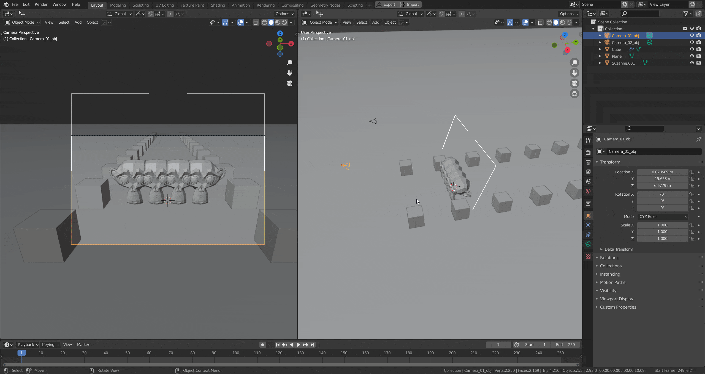

Dolly Zoom (New in 1.1)
A dolly zoom is a cinematic technique in which the camera moves closer or further from the subject while simultaneously adjusting the zoom angle to keep the subject the same size in the frame. The effect is that the subject appears stationary while the background size changes (this is called perspective distortion). Media College

UI
The dolly zoom can be started from the Active Camera Pie (Alt + C):
The Target

The target is a viewport gizmo. It is used both for visualizing the part of the camera cone that will remain static during the dolly zoom and it can also be used to change the distance of the target from the camera. Place the target plane at the object you don't want to move during the dolly zoom.
Interations
- Mouse Movement: This will adjust both distance and focal lenght to perform a camera zoom if no other mode (see below) is enabled.

- D (Target Distance) You enter the distance mode by pressing D once, pressing it again will leave the mode again. Your mouse movement changes the target distance of the camera in distance mode. This has the same effect as moving the target in the viewport.
- F (Focal Lenght) Your mouse movement controls the focal lenght, increasing the size of the target. This has the same effect as changing the focal length from the camera properties panel.
- Alt Keeping alt pressed will ignore other inputs, allowing for larger movements
- Shift The mouse movement has less effect on the value, allow for finer adjustements
- Ctrl The mouse movement has more effect on the value, allow for bigger adjustements